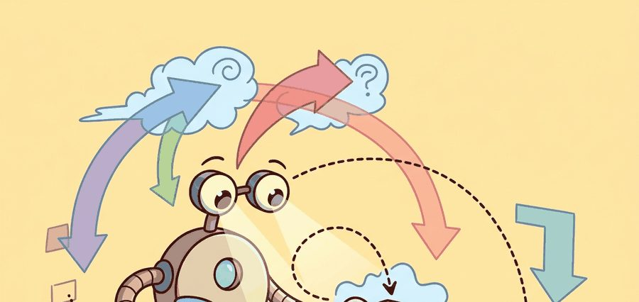
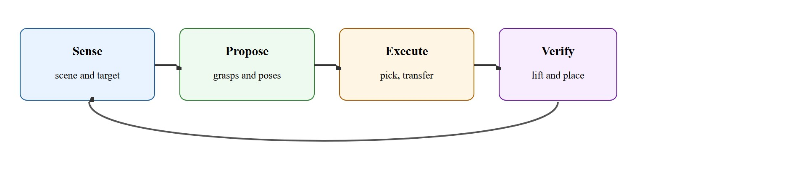
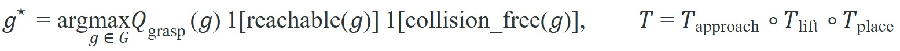

"Pipelines look boring until one missing state estimate breaks the whole warehouse."
A Builder's Planning Notebook

The pipeline stages introduced here assume familiarity with 6D pose estimation from section 27.2 and force-limited execution from section 8.4. The grasp proposal stage is treated in depth in section 43.1, where learned scoring replaces the analytic ranking used here. Contact-rich variants of the execute stage, where the robot must push or slide an object into a fixture, are covered in section 42.3.
A warehouse robot misses a bin by three millimeters, the gripper closes on air, and the whole line stalls. That single failure traces back to one unverified pose estimate that no stage downstream ever caught. Pick-and-place is not a solved problem: it is the stress test that exposes every weak joint in an embodied AI system. As robots move from caged industrial cells into unstructured fulfillment centers and home kitchens, the ability to build pipelines that fail gracefully and recover reliably is the skill separating demos from deployed systems. Each stage repays dissection: its failure modes become clear, and the interfaces between stages reveal exactly where perception backends, planners, and grasp scorers can be swapped without turning the whole stack into a debugging fog bank.
Amazon's fulfillment robots run millions of picks a day, yet the ones that fail rarely fail at the dramatic moment of grasping: they fail three stages later, when a pose estimate no one verified quietly poisons the place. To see why, this section breaks the classical pick-and-place stack into inspectable contracts: segmentation, 6D pose estimation (recovering an object's full position and orientation, all six degrees of freedom, from sensor data), grasp proposal, approach trajectory, gripper closure, lift test, transfer, and place verification.
The payoff is practical. Once the stages are explicit, builders can swap MoveIt, cuRobo (NVIDIA's GPU-accelerated motion-planning library), Dex-Net, or a learned VLA policy into one stage without turning the full system into a debugging fog bank. (VLA stands for Vision-Language-Action model throughout this chapter.)
Most industrial pick-and-place failures are not mysterious. They are stage failures that were never isolated: bad pose proposals, invalid grasps, planner dead ends, premature gripper closure, or unverified placement.
Figure 42.2.1 traces the four-phase loop that organizes the rest of this section: sense the scene and target, propose grasps and poses, execute the pick and transfer, then verify the lift and place before the cycle repeats.

Pick and place is a hybrid system with discrete stages and continuous control inside each stage. The important modeling habit is to attach explicit preconditions and postconditions to every stage so silent transitions are impossible.
A clean factorization treats grasp quality and trajectory feasibility separately, then combines them. That separation matters because a geometrically good grasp may still be unreachable under joint limits or collision constraints. In representative cluttered-tabletop benchmarks (as of 2024), roughly 60% of geometrically high-scoring grasp candidates fail reachability or collision checks. Filtering both conditions together before execution cuts wasted motion attempts substantially, from hundreds per run to under 20 in reported evaluations. Consider a warehouse cell running 500 pick cycles per shift. Without joint reachability and collision filtering, it wastes roughly 40,000 real motion attempts on grasps that could never succeed. The filter drops that number to under 10,000, recovering more than an hour of throughput per shift without changing a single controller gain.

The pipeline observes the scene, proposes grasps, filters by reachability and collision, executes the pick with force-limited closure, verifies the lift, transports the object, and confirms final placement. A solid log stores failures at the stage boundary, not only at the episode boundary.
Each recovery route in step 4 answers a different failure: regrasp releases and re-attempts with a different candidate when the chosen grasp turns out to block placement; reobserve re-runs sensing when the pose estimate looks stale or the object moved; skip-bin abandons the current object and moves to the next when neither regrasp nor reobserve resolves the fault within a bounded number of attempts, so a single bad item cannot stall the whole cycle.
A common but mistaken approach treats a pick-and-place pipeline as a one-shot open-loop sequence: sense once, plan once, execute without feedback. That model breaks in embodied AI. Sensor noise, object motion, and mechanical compliance all alter the world state between stages. A pose estimate accurate enough to select a grasp may be inaccurate enough to cause a collision at placement. A gripper closure that feels complete may have achieved only partial contact. The correct mental model is a closed-loop contract. Each stage reads real sensor data at its boundary, verifies its own postcondition before handing off, and triggers recovery rather than silently propagating bad state downstream.
# Filter grasp candidates by score and downstream feasibility.
grasps = [
{"id": "g1", "quality": 0.91, "reachable": True, "place_ok": False},
{"id": "g2", "quality": 0.84, "reachable": True, "place_ok": True},
{"id": "g3", "quality": 0.73, "reachable": False, "place_ok": True},
]
ranked = []
for g in grasps:
score = g["quality"] * float(g["reachable"]) * float(g["place_ok"])
ranked.append((g["id"], round(score, 2)))
ranked.sort(key=lambda row: row[1], reverse=True)
print(ranked)
print("selected", ranked[0][0])Trace the filter with the three candidates from the worked example. Each effective score is quality times reachable times place_ok, where the indicators are 1 or 0.
g1: quality 0.91, reachable 1, place_ok 0, so score = 0.91 x 1 x 0 = 0.00. Highest raw quality, but it cannot be placed, so it is zeroed out.
g2: quality 0.84, reachable 1, place_ok 1, so score = 0.84 x 1 x 1 = 0.84. Slightly weaker grasp, fully feasible end to end.
g3: quality 0.73, reachable 0, place_ok 1, so score = 0.73 x 0 x 1 = 0.00. Place-compatible but unreachable, so it is zeroed out.
Sorting by score gives [g2: 0.84, g1: 0.00, g3: 0.00], and the selector picks g2. Notice that g1 would have won a naive sort on raw quality (0.91 beats 0.84): the indicator multiplication is exactly what demotes the impressive-but-dead-end grasp below the modest-but-feasible one.
Expected output: The expected output selects the slightly weaker but fully feasible grasp. A robust pipeline prefers reachable and place-compatible grasps over visually impressive but dead-end candidates.
MoveIt 2 and cuMotion can own the arm-motion stages, while Dex-Net style scoring or learned grasp heads own the proposal stage. The pipeline remains legible only if stage outputs are serialized into one manifest.
Teams often celebrate grasp success and miss that their place stage is doing all the hard work with luck. If the chosen grasp makes placement infeasible, the upstream score is misleading by construction.
Sorting cells for e-commerce fulfillment frequently fail on the transition from lift to transport, where swinging payloads or poor suction seals only become visible once the box clears the tote.
Amazon's Sparrow and Robin sorting arms run exactly this staged pick-and-place contract at warehouse scale, pairing suction and parallel-jaw grippers with vacuum-decay (how quickly suction pressure drops after contact, which signals a failing seal) and wrist-force lift verifiers before each transfer. The decisive engineering choice is treating placement feasibility as a first-class filter at grasp proposal time, which is what keeps tens of thousands of cycles per shift from stalling on grasps that can never deposit into the destination tote.
Many teams implement lift verification as a single force threshold: if the measured load exceeds a few hundred grams, the pick is declared successful. This fails when a suction cup achieves partial seal, reporting adequate vacuum for one to two seconds before the object slips during transfer. A robust lift verifier combines gripper-width change (for parallel-jaw), vacuum decay rate (for suction), wrist-force delta above baseline, and object tracker re-detection at the lifted pose. Any one of those signals alone will miss a class of slippage events that only compound downstream.
In MoveIt 2, wire your multi-signal lift verifier as a ExecuteTaskSolution callback that reads from /gripper/joint_states (width), /vacuum_gripper/pressure, and /wrist_ft_sensor/wrench in a single synchronized subscriber using message_filters::TimeSynchronizer. Setting the sync queue depth to 5 and the time tolerance to 50 ms typically prevents the common failure where signals arrive slightly out of phase and the verifier sees a spurious drop; exact values depend on your sensor rates and should be tuned per rig. Without this, a partial-seal event sampled across two different ROS message timestamps can look like a clean hold, masking slippage that only appears during transfer.
Pick-and-place demos love the moment of lift. Production robots earn their salary during the far less cinematic moments of handoff, transport, and final pose verification.
Diffusion-based grasp and motion generation (2024-2025). Diffusion policies trained on large teleoperation datasets now produce full pick-and-place trajectories conditioned on language instructions and RGB-D observations, replacing hand-coded stage logic with a single learned action distribution. The Columbia and Stanford groups' work on 3D Diffusion Policy (DP3, 2024) shows that point-cloud conditioning closes the sim-to-real gap that plagued earlier image-based diffusion policies, achieving over 85% success on novel object pick-and-place without domain randomization.
Foundation-model grasp proposal with in-context adaptation (2024-2025). Large vision-language models are now queried at proposal time to reason about affordances and task constraints rather than just object category. Physical Intelligence's pi0 (2024) and Google DeepMind's RoboVLMs line demonstrate that a single frozen backbone can propose semantically grounded grasps across hundreds of object types, with the pipeline inserting learned grasp heads as lightweight adapters on top of the frozen representation rather than retraining from scratch for each object class.
Closed-loop replanning at millisecond timescales (2024-2026). GPU-parallel trajectory optimization, exemplified by NVIDIA's cuRobo (2024) and the Curobo-based Isaac Lab integration, reduces full-arm replanning from hundreds of milliseconds to under 5 ms on edge GPUs, making it practical to replan at every control tick rather than once per stage boundary. This collapses the classical sense-propose-execute sequence into a continuous feedback loop where the grasp and placement targets are updated in real time as the wrist-mounted depth sensor observes object motion during approach.
So far: research is pushing the classical sense-propose-execute-verify pipeline toward learned, closed-loop replacements, diffusion policies that generate whole trajectories, foundation models that propose grasps from language and vision, and millisecond-scale replanning, but each still has to be checked against the same reachability and placement-feasibility contracts described earlier in this section.
Open problem for PhD students. Current frontier systems treat the grasp selection and place-feasibility verification as sequential filters. A student could investigate whether a single differentiable model can jointly optimize grasp pose and full placement trajectory in one forward pass, propagating placement-constraint gradients back through the grasp selection head. The challenge is that placement feasibility is discontinuous at collision boundaries, so the open question is what surrogate loss (a smooth, differentiable stand-in for the true discontinuous objective, used only so gradients can flow during training) allows stable gradient flow through the full pick-to-place objective without collapsing to degenerate grasps that satisfy the surrogate but fail on hardware.
Could you explain why your chosen grasp is compatible with both the pick and the place stage, or are you hoping the planner will rescue a bad upstream decision?
Verifying each stage against its own postcondition is the discipline that makes the pipeline trustworthy, but the decomposition that lets us verify stages independently is itself an assumption that can fail.
Stage decomposition itself has failure modes worth naming. The pipeline assumes that each stage can be evaluated and verified before handing off to the next, but two conditions break that assumption in practice. First, deformable or articulated objects (a bag of chips, a hinged lid) destabilize the pose estimate across the grasp and lift stages. The object changes shape under contact, so postconditions computed from the initial estimate go invalid mid-execution. Second, when placement targets are narrow relative to pose uncertainty, a grasp that is nominally place-compatible at proposal time can still collide at the place stage. Accumulated errors across sense, approach, and closure push the delivered pose outside the feasible region. In both cases, the fix is not a better planner but tighter closed-loop feedback inside the execute stage rather than only at stage boundaries.
The subtle systems question is whether a grasp preserves downstream placement optionality while solving the immediate pickup. A bin-picking grasp that blocks the object's target orientation or occludes a second arm may be locally strong and globally poor.
Think of it like gripping a jar of pasta sauce to unscrew the lid: if you grab it palm-down with your thumb pointing away from you, you have already locked yourself out of the counterclockwise wrist rotation you need. The grip felt secure in your hand, but it made the actual goal unreachable without putting the jar down and starting over. A robot choosing a grasp faces the same trap: the fingers close on a solid contact, but the wrist degrees of freedom needed to rotate the object into its target slot are gone, and the only recovery is a costly mid-air regrasp or an aborted cycle.
This matters in embodied AI because a robot's fingers constrain how the object can be re-oriented during transfer. If the chosen grip blocks the wrist rotation needed to align the object with its target slot, the arm must either regrasp mid-air (expensive and often unstable) or abort the cycle. Physical joint limits, finger geometry, and target-bin clearance all couple the pick decision irreversibly to the place outcome.
Planners handle this by scoring each candidate grasp against the full task trajectory: the grasp proposal stage computes, for each grip, whether a collision-free wrist path exists from the lifted pose to every required place orientation. Candidates that pass pickup scoring but fail this forward simulation are filtered before execution, keeping only grasps that leave the required placement degrees of freedom reachable.
Open-loop pipeline charts and evidence-backed manifests differ in one way that matters: the manifest makes stage interactions debuggable, so you attribute a failure to a boundary instead of searching the whole stack blind.
A grasp that works but cannot support the place is not a successful pick: it is a deferred failure waiting for the transfer stage to expose it.
| Tool or Library | Role in the Topic | Builder Advice |
|---|---|---|
| MoveIt 2 | Stage planning and execution | Use separate planning groups or task constructors for approach, lift, and place. |
| cuMotion via MoveIt plugin | High-throughput replanning | Useful when the scene changes quickly or the cell runs on NVIDIA hardware. |
| Dex-Net or GQ-CNN (Grasp Quality Convolutional Neural Network) | Grasp scoring | Use it to rank candidates, but always filter through reachability and place constraints. |
Implement a two-object pick-and-place benchmark where one object is easier to grasp but impossible to place without collision. Show that your selector avoids it.
The manifest that made those stage interactions debuggable also pays off the moment a cycle actually breaks, because it lets you attribute the failure to a specific boundary rather than the run as a whole.
When a full cycle fails, label the first violated postcondition: pose estimate, chosen grasp, approach path, closure, lift, transfer, or place. The first broken stage is usually the most informative one.
Beginner (weekend): Stage-logging pick-and-place in PyBullet. Build a tabletop pick-and-place script using PyBullet and a parallel-jaw gripper that logs each stage boundary (sense, propose, execute, verify) to a JSON manifest and prints which stage fails when an object is deliberately displaced. The key challenge is writing a lift verifier that reads joint reaction forces from PyBullet's getJointState rather than assuming success after gripper closure.
Intermediate (1-2 weeks): Grasp-to-place feasibility filter in Isaac Lab. Implement a pick-and-place benchmark in Isaac Lab with two object classes: one easy to grasp but blocked from the target bin by wrist-limit constraints, and one harder to grasp but fully place-compatible. Wire the grasp selector to run a forward simulation using MoveIt 2 reachability queries before committing, so the robot learns to prefer the harder grasp that preserves placement optionality. The key challenge is connecting Isaac Lab's GPU-parallelized environment to a ROS2 MoveIt 2 planning node in real time without introducing synchronization lag that invalidates the feasibility check.
Official documentation for planning, kinematics plugins, and execution interfaces in ROS 2 manipulation.
Official integration of GPU motion generation into MoveIt workflows.
Dex-Net ties grasp datasets, robust grasp metrics, and learned scoring into deployable pick pipelines.
A pick-and-place pipeline is trustworthy when every stage exposes a typed handoff (a stage output with a fixed, checkable format, such as a pose plus a confidence score, rather than an untyped blob) and a verifier, not when the end-to-end demo looks smooth from far away.
Write a stage manifest for a tote-to-shelf pick-and-place task, including one failure branch for bad perception and one for failed lift verification. Explain what metric each branch should log.